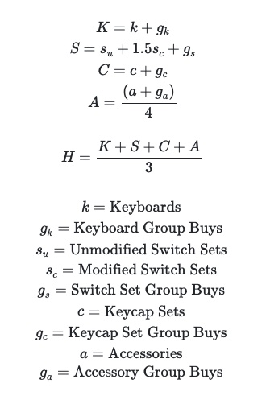

What goes in those boxes, anyway?
- Keyboards
- The total number of keyboards you own. A keyboard is a PCB and whatever it is mounted to/on/in (whether assembled or not). Stand-alone or extra PCBs are counted as accessories. Macropads and Num Pads are counted as keyboard kits; however, their switches and keycaps are not counted in their respective categories.
- Unmodified Switch Sets
- The total number of stock switch sets that you own. A set of switches sufficient to fill a normal-sized board. Duplicate sets are counted if they were purchased separately or are used/intended to be used on separate boards.
- Modified Switch Sets
- The total number of customized sets of switches that have been modified by you. Modified switch sets include those that you have lubed, filmed, or made other similar modifications to. Clipping switch pins does not count as a modification. If you make Frankenswitches (where you take components from one set of switches and use them to replace the components of another set of switches) both sets are considered modified if both sets have been reassembled. Each set of modified switches is counted as a single set regardless of the number of modifications made.
- Keycaps
- The total number of keycaps sets you own. If you have multiple kits for the same set they are all counted as one set unless they can be used to fully kit multiple boards in which case they are counted as a number of sets equal to the number of boards they can fully kit simultaneously. Artisan Keycaps are counted as Accessories.
- Artisans
- The total number of artisan keycaps you own. This does not include novelties.
- Deskpads
- The total number of desk mats you own.
- Cables
- The total number of 'fancy' cables you own.
- Other Accessories
- The total number of other keyboard accessories you own such as stand-alone or spare PCBs, alternate plates, switch testers, etc.
- X Group Buys
- The total number of orders, pre-orders, group buys, etc. of the relevant item that you currently have placed but have not yet received.
- I prefer to do math by hand, what's the formula?
- Masochist.
